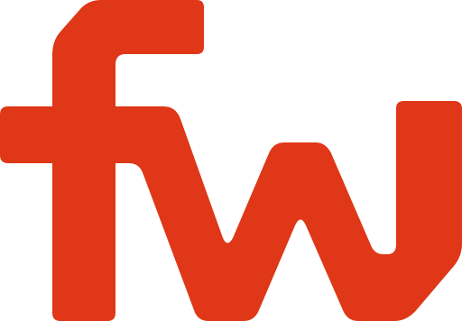

flopwireDownload preview SVG ↗One mark.
Three directions.
Compare how the new identity changes the homepage. Each direction keeps the same product story.
The existing composition with the new ligature, heavier wordmark, and coordinated orange accents.
Open full page ↗